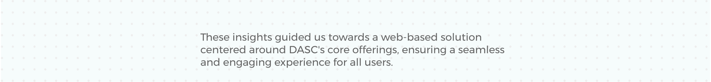
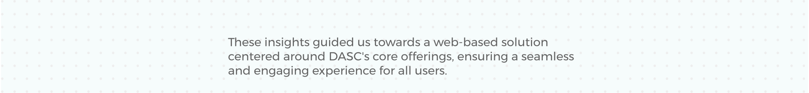
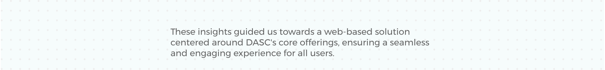
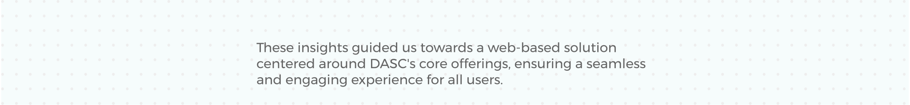
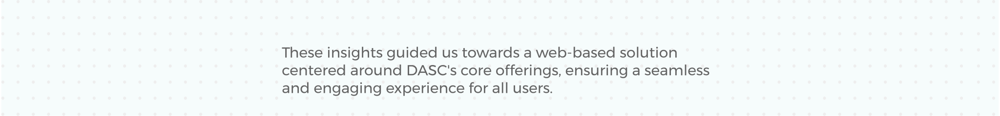

Work
About
Back to Projects
DASC Static Website
Revolutionary Design Solutions for Digital Arts Sales Corporation
Your browser does not support the video tag.
Your browser does not support the video tag.

Back to Top


 



 
